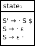
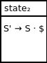
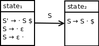
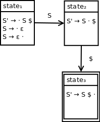

We've seen all of the constructs involved in performing a closure calculation.
In this section, we will construct our first LR(0) state machine.
The language we will be analyzing is specified by the following grammar:
S → ε
This grammar has the following augmented grammar:
S' → S $
S → ε
This language has the following LR(0) parse table:
| $ | S | S' | |
| state1 | reduce2 | goto2 | |
| state2 | accept |
Parsing input string ε:
| Input queue | Parse stack | Action |
|---|---|---|
| 1 | reduce2 | |
| 1 S | goto2 | |
| 1 S 2 | accept |
This parsing procedure corresponds to the following derivation of the empty string (ε):
To begin our parser state machine (DFA) construction, we should first compute our initial closure.
To do so, we qualify our initial production rule by adding a dot at the start of the right-hand side:
S' → · S $
Our initial set of qualified productions is:
{S' → · S $}
Calculating the closure of this set, we end up with:
{S' → · S $, S → · ε, S → ε ·}
Observe here how our initial parse state contains qualified production S → ε ·, which corresponds to the observed parsing behaviour of reducing via the rule S → ε.
We can visualize this initial parse state as:
We've reached the production S → ε in our initial parse state.
However, after we've performed the reduction via the rule S → ε, as shown above, the parser needs to transition into a state to indicate that S has been fully processed.
In particular, we want to reach the qualified production: S → S · $. The corresponding state is:
There are no additional qualified productions to be reached through a closure here, since our next symbol is $ and not a nonterminal.
Since this state is reached from a goto action corresponding to nonterminal S, we can link our two states with a transition on nonterminal S:
Continuing on with this pattern, we can induce that we want to use the same construct to process the end of string symbol $.
In particular, we want to transition from qualified production S' → S · $ to S' → S $ ·. We can update our DFA to be:
The $ transition here illustrates that we are moving into an accepting state once we reach the end of our input string. Note that state3 is marked as an accepting state with a double border.
Although state3 is not explicitly used in our parsing process, we treat the transition to state3 as the accept action because this state is an accepting state.
We've see the LR(0) DFA construction process for a grammar that derives the empty string ε.
Next, we will extend this process to handle a grammar that derives a simple string.
GitHub Repository: https://github.com/bprollinson/ripal
Copyright © 2017 Brendan Rollinson-Lorimer